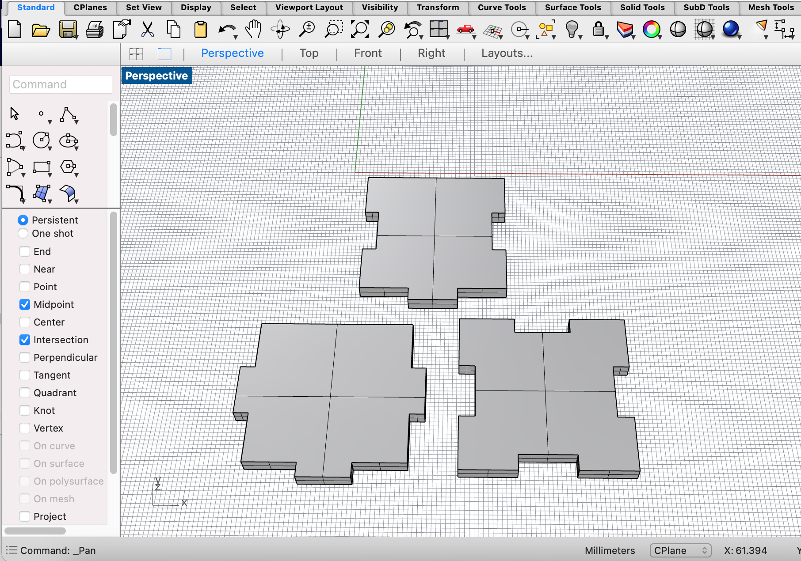
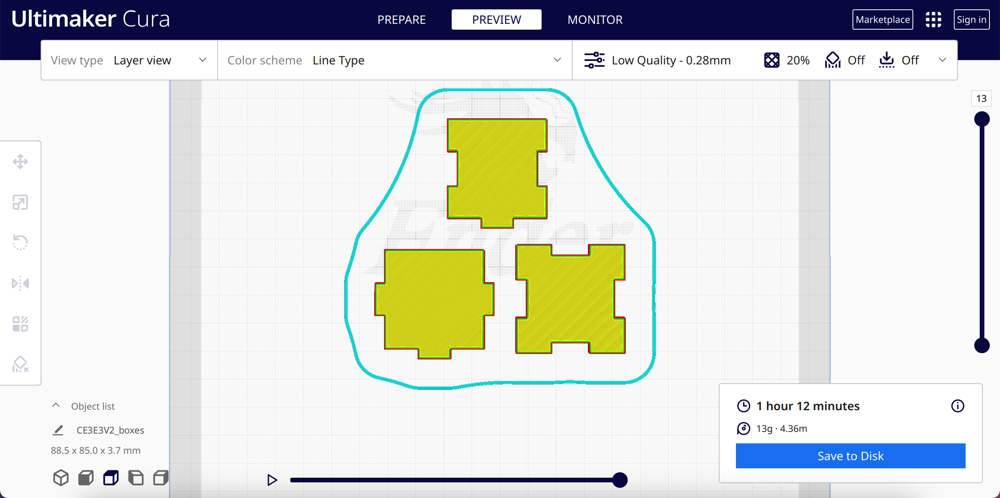
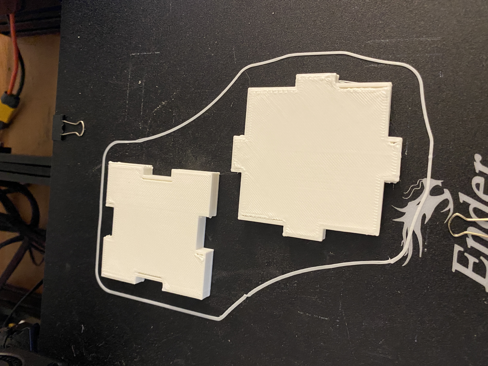
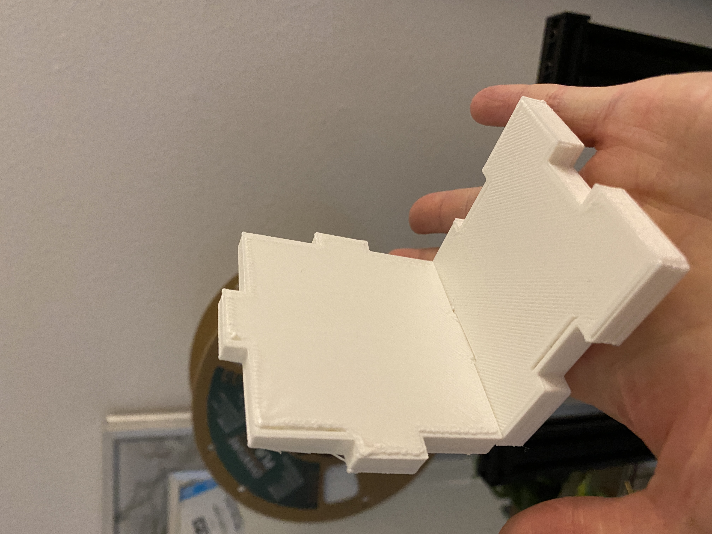

A4: Subtractive Manufacturing!
Nov. 1, 2022This assignment was extremely difficult than how I imagined it to be... I mean how hard can it be to make a box. I was truly humbled. When I heard that we had the option to either use the CNC Mill or 3D printer, I immediately gravitated towards 3D printing as I thought it would be more convenient and a lot easier to do.
Working in Rhino, I designed a few test pieces. Originally, I wanted my box to be tiny, but here are all the failed pieces.

I decided to redesign the box to reduce the number of box joints since it was getting way too complicated.

Since my printer had issues with the box joints, I decided to make the boxes bigger. I went with a 60mm box.
To my surprise, it fits! But I have to adjust the extrusion distance as it was a bit too thick.
I went back to Rhino to make adjustments such as making the extrusion much smaller and adding a smooth side to the top of the box.
Unfortunately I had a lot of trouble creating the bottom of the box. After many attempts, I was not able to get it to fit with the measurements. I think that my printer has issues with its calibration :(
Source Files
Rhino (.3dm)Cura (.stl)
gCode
Return to Main